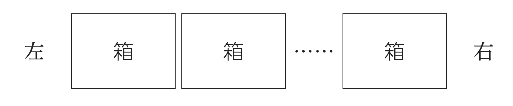
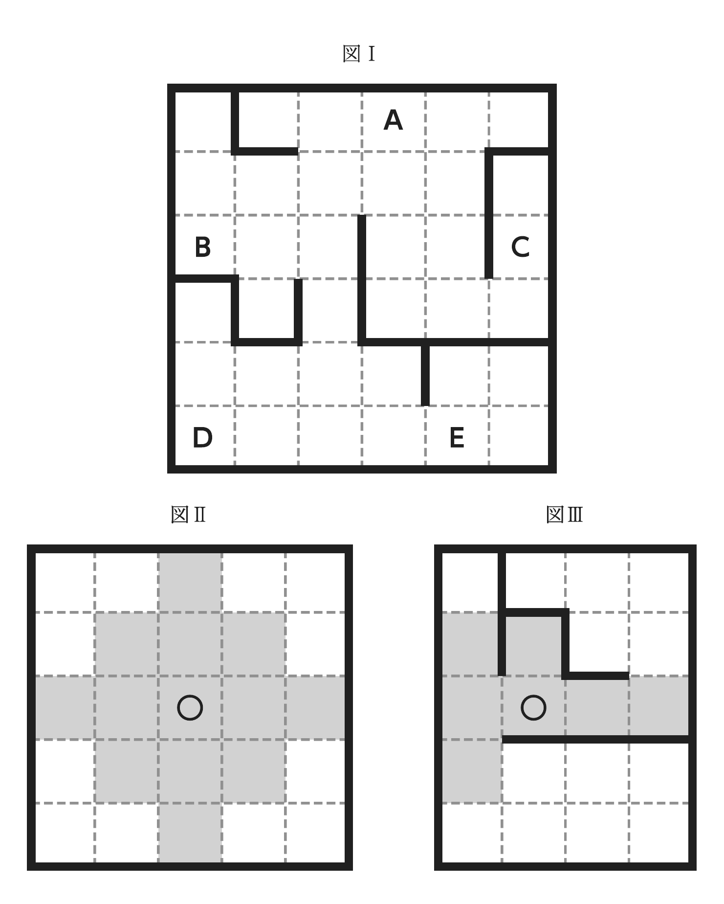
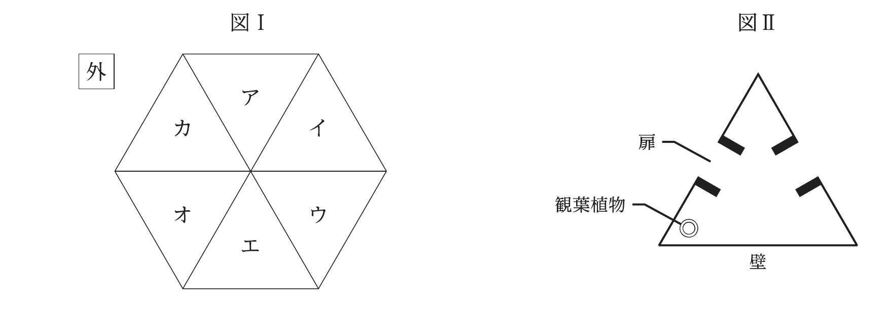
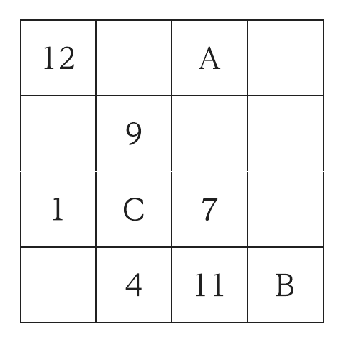
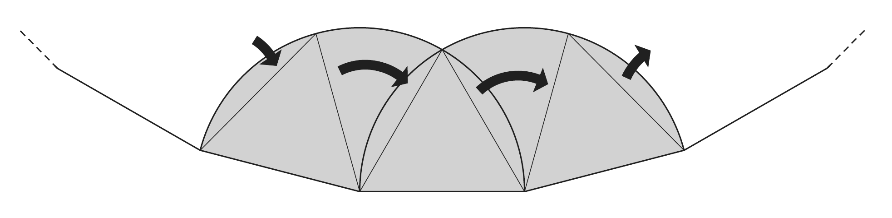
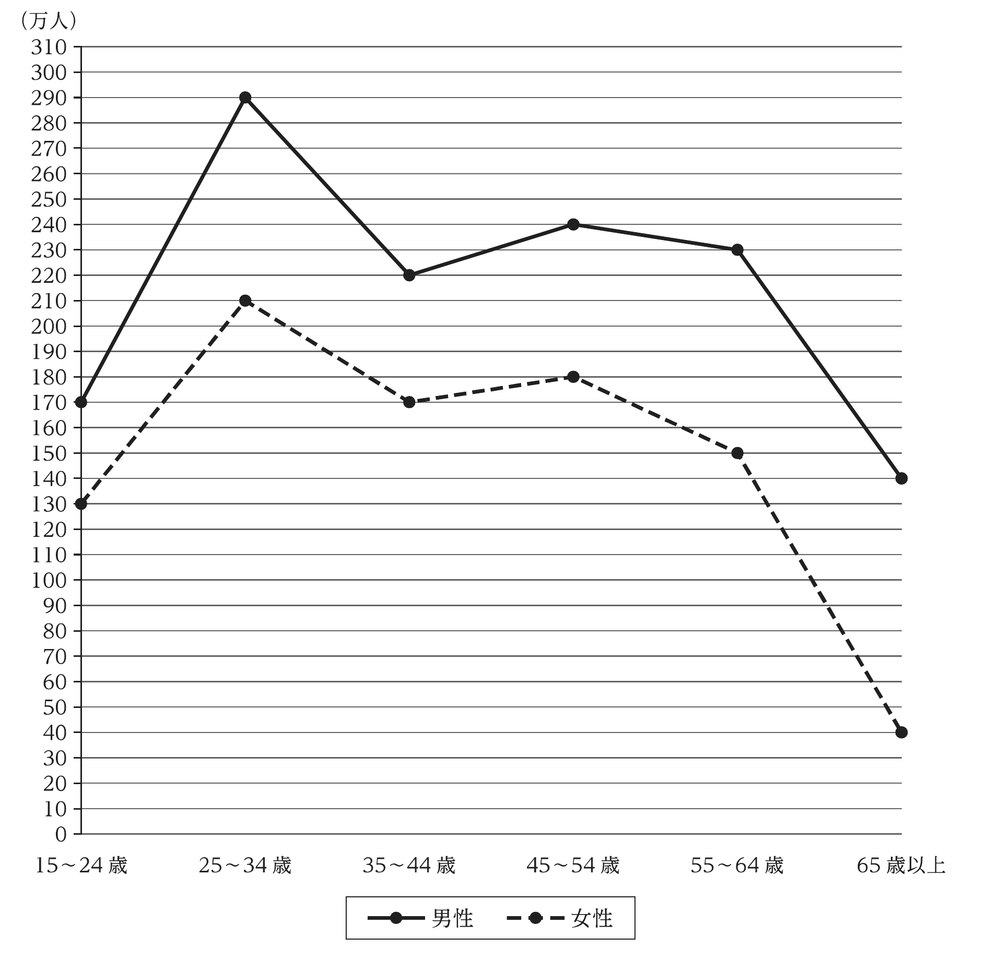
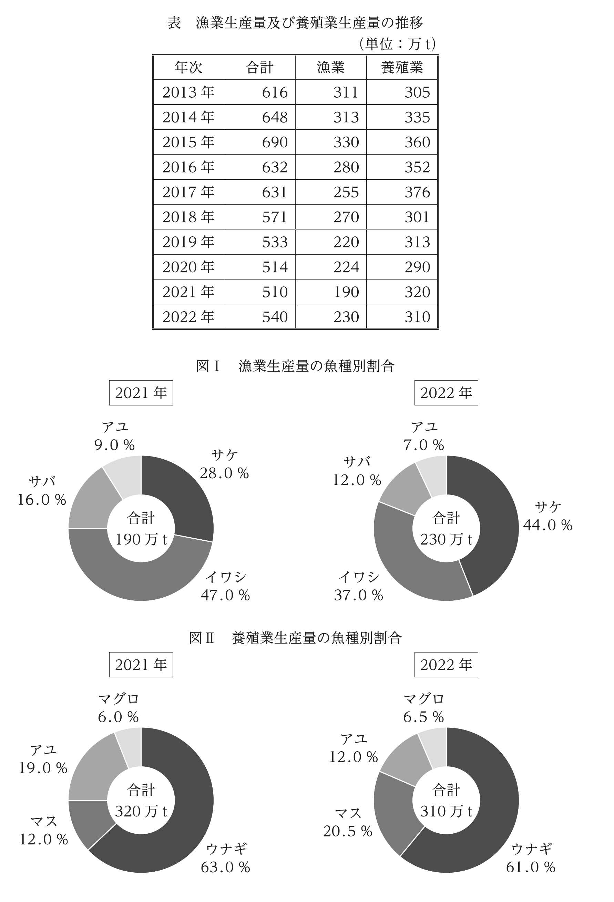
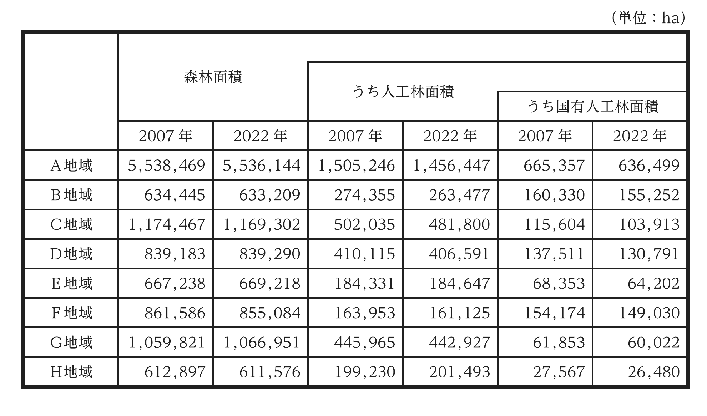

2024年度 基礎能力試験Ⅰ部 解説
原本：24I部.pdf。全24問。正答番号は巻末（原本PDFの39ページ、Ⅱ部冊子の原本PDFの35ページにも同じ表）に掲載されている。原本PDFのページ番号は表紙を1と数える。以下は独自の学習用解説である。問題本文は原本を併用して読む。
初回は時間をかけても「どの一文・どの条件が根拠か」を説明できることを目指す。二周目では、自分で方針を選べるかを試す。原本の制限時間は24問で2時間だが、1問5分は単なる平均であり、各問を必ず5分で打ち切るという意味ではない。
問1｜生物と環境の相互作用
正答：1／原本PDFの2～3ページ
読み方： 本文はまず生物と環境を別々の独立したものではなく、互いの性質を含む一つの体系と捉える。次に、環境の物質的性質から生物を説明する研究方法は認めつつ、「環境が生物のすべてを決める」という結論には反対する。生物が環境へ働きかける主体性があるからである。1は最初の体系の説明を適切に言い換えている。
誤答の見分け方： 2の「進化につれて対立が深まった」は書かれていない。3の「近年」「優位」という時期・関係も本文にない。4は本文に存在しない別の研究方法との比較を持ち込む。5は生物の自律性・主体性を認めない点が逆。
関連知識・コツ： 内容一致では、自分の科学知識より「本文の筆者が何を述べたか」を優先する。「その方法は間違いではない、しかしその結論は違う」という部分的な承認を、全面否定と取り違えない。
当日の確認： 選択肢の「近年」「よりも」「すべて」に印を付け、その追加情報の根拠が本文にあるか確認する。
問2｜紛争の悪循環
正答：3／原本PDFの4～5ページ
読み方： ①身内意識だけで紛争が決まるのではない。②資源の希少性等と結び付き、紛争の過程で身内意識が煽られる。③双方が自分は防衛していると思って行動しても、相手には攻撃と映り、対立が強まる。この二つの増幅過程をまとめた3が本文と一致する。
誤答の見分け方： 1は事前の一体感を決定要因にしており、本文が否定する説明。2の「国際社会が判定して対抗措置をとるべき」は筆者の提案ではない。4は外から貼られるレッテルを内部で使うものへ変更。5は資源の量だけで態度が決まる、希少性解消で身内意識も収まるという単純化で、本文の自己増幅の説明と合わない。
関連知識・コツ： 原因を一つに決める説明と、複数条件が相互に作用する説明を区別する。「それ自体では決定要因でない」が重要な限定。
当日の確認： 「望ましい一般論」と「筆者が具体策として支持したこと」を分ける。寛容が重要だからといって、肢2の対抗措置まで本文が勧めたことにはならない。
問3｜義務からの行為と問い直し
正答：4／原本PDFの6～7ページ
読み方： 「義務に従う」は外形上ルールと一致すること、「義務から発する」は義務を尊重する動機から行うこと。本文は、この二つが現実には混ざり、純粋な動機か確定できないと言う。しかし、それは道徳的価値がなくなるという結論ではない。問い直しが行為をもう一度始める力になる。最後のこの反転を捉える4が正解。
誤答の見分け方： 1は比較対象を「適合して」と「従って」に置き換え、肝心の「から発して」がない。2は区別の難しさから両方を同等に望ましい行為へ飛躍。3は価値が揺らがないとされる対象をすり替える。5は義務に従うだけの行為への価値付与を持ち込む。
関連知識・コツ： 難しい哲学語を全部理解する前に、A＝従う、B＝から発する、と記号化して論理を追う。「だが」「むしろ逆」に続く部分は、筆者の結論の向きを変える重要な接続。
当日の確認： 「に」「から」「を目指して」という短い助詞が論点そのもの。似た語としてまとめて読まない。
問4｜言葉の共有性・空欄補充
正答：2／原本PDFの8～9ページ
解き方： 空欄の直前は、人は人々が交換する言葉の中で考えを紡ぐという説明。直後は、考えは流通する言葉・これまで読み聞きした言葉で編まれるという説明。したがって間には「自分だけの言葉はそもそもない」が入る。
1は心だけを独占的なものにしており逆。3の身体が心を動かすという因果はない。4は独自の言葉を作るべきだという主張で逆。5の「つねに感覚的に判断」も空欄前後の論点ではない。
関連知識・コツ： 空欄の前後で同じ主張を違う例で説明する文章では、両側に共通する一段抽象的な文が答えになりやすい。本問は「わたし」「身体」「心」を通じ、完全に自分だけのものと見なすことを問い直している。
当日の確認： もっともらしい主張を選ぶのでなく、実際に空欄に代入し、直後の説明がその理由・言い換えになっているかを読む。
問5｜届けられなかった手紙・英文内容一致
正答：3／原本PDFの10～11ページ
流れ： フランス船の船員に届くはずの手紙→船が英国に拿捕される→フランス郵政当局がロンドンの海軍本部へ転送→英国側で保管→後年研究者が偶然発見。この移動の順序に合う3を選ぶ。
1の研究者が子孫だという情報はない。2のpossessは文脈上抱擁等を表し、妻の書き間違いではない。投獄中に死亡したとも書かれていない。4は女性が重要な経済・政治の判断を担ったという本文と逆で、59%は女性が書いた手紙の割合。5は本文が述べる普遍的経験を、その時代だけの特殊性に変えている。
関連語： by chance＝偶然、forward＝転送する、intended for＝～宛ての、universal＝普遍的な。he・they・itが誰を指すかを追うと、長い文章でも物の流れを失わない。
当日のコツ： 人数・割合は「何を数えた数字か」までメモする。59%を「夫へ判断を求めた割合」に変えるのは分母・分類のすり替え。
問6｜土地所有権と政治
正答：4／原本PDFの12～13ページ
流れ： 従来の説明＝国家の行政能力が弱いから所有権を与えられない。今回の研究＝能力はあっても政治的理由で与えないことがあり、民主的政権下では付与されやすい。独裁下でも支持基盤に偏って付与される。終盤の「過去1世紀に約3分の1の国が土地改革を試みた」「なお約20億人が正式な権利のない土地で農業」の内容に4が対応する。
1は従来説の裏付けとしているが、本文は挑戦・修正。2は政体間の違いを否定しており逆。3の新しい支持者・低所得者は、本文のcore supporters（中核支持者）と違う。5は従来説を研究者自身の結論にするすり替え。
関連語： conventional wisdom＝従来の通説、empirical＝実証的な、grant＝与える、bolster＝強化する、property rights＝財産権。
当日のコツ： 「これまでの説」と「今回分かったこと」を二列にする。英文のfinds something differentのような転換表現が、結論の入れ替わりを示している。
問7｜SNS利用を控える実験
正答：4／原本PDFの14～15ページ
読み方： SNSを控えると気分が改善するという研究と、禁断症状が出るという研究の食い違いが出発点。WadsleyとIhssenは学生51人を15日間追跡し、その中の1週間、指定のSNSを避けるよう求めた。その後の反応を調べた、という実験手順を述べる4が一致する。
1の数年間・二分化して譲らないという細部はない。2の患者の訴えが契機・英国初という説明もない。3は治療法の推奨に変えているが、本研究は使用時間や渇望等の調査。5の約3分の1は参加者の割合で、英国民全体ではない。学術界で高い支持という評価も本文外。
読み落としやすい点： 87%が完全な不使用には成功しなかった一方、平均利用時間は減少した。「完全にゼロにできない」と「時間が減らない」は別。予想された強い渇望は観察されなかったというのも、あらゆる人にSNS依存が絶対にないと証明した意味ではない。
関連知識・当日のコツ： 研究の対象・人数・期間・操作・結果を分ける。サンプルの特徴を国民全体へ広げた選択肢は、本文に一般化の根拠があるか確認する。
問8｜観葉植物と空気浄化
正答：4／原本PDFの16～17ページ
読み方： 植物や培地の微生物は汚染物質を取り込める。しかし実験室で除去できることと、普通の室内で実質的効果があることは別で、大量の植物が必要だというのが核心。4はこの規模の問題を正しくまとめる。
1は植物が特定物質を出すと人が新鮮に感じるという説明を追加。2は個人の制御が難しいという本文と逆。3は微生物や培地の方が大きな役割を果たすという記述を逆転。5はHEPAとグリーンウォールの効果・費用を直接比較しているが、その比較結果は示されていない。
関連語： pollutant＝汚染物質、medium＝ここでは培地、measurable impact＝測定できるほどの影響、out of reach＝手が届かない。active green wallは根の系へ空気を通して効率を上げる工夫で、単に鉢を置く方法とは違う。
当日のコツ： 「効果がある／ない」だけでなく、実験条件・必要量・費用という条件を残して読む。本文の「大量なら」を落とすと断定が強すぎる選択肢になる。
問9｜to-doリストとdoneリスト
正答：1／原本PDFの18ページ
空欄A： まだすることにとらわれるのではなく、既に達成したことを振り返るのでdone。「already planned」では予定を立てただけになり、対比が成立しない。
空欄B： 長期の大きな目標は毎日起こらない成功なので、日々の小さな達成から喜びを見いだすsmall victoriesが適切。
空欄C： 仕事で幸福を感じた日に共通するのは意味ある目標に向かって進むこと。making progress onが後続のincremental step forward（小さな前進）につながる。以上から1。
誤答の見分け方： 2・3・5のbig accomplishmentsは小さな進歩との対比に反する。3・5のto-doリスト改善は本文の実験の結果ではない。4・5のplannedはAで落とせる。
関連知識・当日のコツ： 同じ内容がdone、accomplished、small wins、progressと繰り返されている。単語単体ではなく、この言い換えのまとまりを拾うと空欄を埋めやすい。自身の復習も「今日は問11の集合を図なしで解けた」のように具体化すると進歩を確認できる。
問10｜英文整序・寄付の新しい方法
正答：4（ウ→ア→エ→イ→オ）／原本PDFの19～20ページ
- 冒頭は寄付改革が求められる社会状況。次にウでMacKenzie Scottを初めて紹介し、2019年の離婚と資産に触れる。
- アのIn the same yearとsheが、ウの2019年とScottを受ける。寄付総額165億ドルを述べる。
- エのFor comparisonは、その巨額さを他の寄付者と比較する文。
- イは、それほど多額を素早く寄付できた理由を提示する。複雑な手続を取り払ったという主張。
- オは、長い申請手続がない、支出判断を逐一監視しない、とイの方法を具体化する。末尾のno-strings givingという一般化につながる。
1はアのshe・同じ年の指示先がない。2・3は未紹介のScottの行動理由から始まる。5はウからイに進むため「それほど多額を素早く」の根拠がまだなく、アの同じ年も遠ざかる。
関連知識・当日のコツ： 整序は全順列を試さず、「人物紹介→代名詞」「年→同年」「主張→具体化」の固定ペアを先に作る。本問ならウ→ア、イ→オが強い接続。no strings attachedは条件・ひも付きでないという表現。
問11｜履修科目の集合
正答：2／原本PDFの21ページ
日本史をJ、東洋史をO、西洋史をW、地理をGと書く。GはOともWとも両立しないうえ全員2科目以上なので、G履修者は必ずJGの2科目。3科目履修の1人はJOWとなり、4科目履修者はいない。Jを履修しない6人はOWの2科目に限られる。
残るJOのみをx人、JWのみをy人、JGをz人と置く。OとWの人数が同じなので x+6+1=y+6+1、すなわちx=y。GはOより9人多いのでz=x+16。全員の合計はx+y+z+6+1=50だから、3x+23=50、x=y=9、z=25。
| 履修の組合せ | 人数 |
|---|---|
| JOのみ | 9 |
| JWのみ | 9 |
| JGのみ | 25 |
| OWのみ | 6 |
| JOW | 1 |
Wを履修しOを履修しないのはJWのみの9人なので2。1のJもWもない人は0人。3のGなしは25人。4のJGは25人。5のOありJなしは6人。
関連知識・当日のコツ： 4集合の複雑なベン図をいきなり描かず、「同時には取れない」を使って可能な組合せを先に減らす。「3科目のみ」の人を2科目のみの人数へ二重計上しない。
問12｜カード配分を人と人の組で考える
正答：5／原本PDFの22ページ
4人の組はAB・AC・AD・BC・BD・CDの6通り。それぞれが一つの数字を共有し、数字も6種類が2枚ずつなので、各数字をこの6本の線に一つずつ割り当てると整理できる。3枚しか持たない各人が他の3人全員と共有するため、同じ人が同数字2枚を持つ余裕はない。
BCの共有が5の場合： 5の2枚はBとCに渡るのでDに5はない。
BCの共有が3の場合： Cの5はA又はDと共有する。仮にDも5を持つと、Dは4・5・ADの数字を持つので、BD=4、CD=5。Bは条件の6も持つからAB=6。Aは6を含む連続3数なので4・5・6でなければならないが、4はBD、5はCDで既に使い切り、Aに渡せない。矛盾。したがってこの場合もDに5はない。
他の肢が確実でない例： A={1,2,3}, B={1,5,6}, C={2,4,5}, D={3,4,6}なら1・3は成立しない。A={2,3,4}, B={2,5,6}, C={1,3,5}, D={1,4,6}なら2・4は成立しない。いずれも各数字2枚・各組一つ共有という条件を満たす。
関連知識・当日のコツ： 物を直接人へ配るより、共有関係を線で表すと、同じ数字を3人に重複配分するミスを防げる。「確実にいえる」は一例で成立しただけでは足りず、全場合での成立を示す必要がある。
問13｜箱の数と奇数・偶数

正答：2／原本PDFの23ページ
箱の数をnとする。マンゴーは左から4番目、モモは左からn−2番目。隣り合うのでn−2=3又は5、つまり箱は5個か7個。果物の総数は3+2+3+3+2=13個。
4種類入る箱には、リンゴ・ミカンに加え、マンゴーかモモ、およびキウイが必要。マンゴーとモモは別箱だからである。モモ側に4種類だと2+1+1+2=6個となり偶数で条件違反。よって4種類の箱はマンゴーの箱で、3+1+1+2=7個。
モモの箱は2個のままでは偶数なのでリンゴかミカンを一つ追加し、3個になる。残りの果物は13−7−3=3個しかなく、残る全箱を奇数個で埋めるには残り3箱、つまりn=5。モモは左から3番目で、モモとリンゴ又はミカンの2種類が入る。
1はリンゴかミカンか未確定。3の右から4番目は左から2番目だが、キウイは左4番目。4はモモとキウイが別。5の1種類の箱は残りの3箱で、5箱ではない。
関連知識・当日のコツ： 個々の配置を試す前に総数と偶奇を見る。「全箱が奇数」なら各箱最低1個という下限が強力。種類数と個数を混同しない。
問14｜順位の入れ替わり
正答：1／原本PDFの24ページ
Eは令和4→5年度に四つ順位を下げるので、1位→5位しかない。Aは常に上位2位で、令和4年度はEが1位だからA=2位。翌年度は全チーム順位が変わるためA=1位。
令和3→4年度で変わるチームは2チームだけ。Cの3順位低下は1位→4位か2位→5位だが、後者だと令和3年度のAは1位になり、翌年度にはA・C・Eの3チームが変動して条件に反する。よってCは1位→4位。順位が変わる2チームが互いに入れ替わるので、Eは4位→1位。Aは2位のまま。令和5年度の2位にはA・B・D・Eのいずれも入れないのでC=2位。したがって令和3年度Aと令和5年度Cはともに2位。
残る場合は次の2通り（各欄は順位）。
| 場合 | 年度 | A | B | C | D | E |
|---|---|---|---|---|---|---|
| ① | 令和3 | 2 | 3 | 1 | 5 | 4 |
| ① | 令和4 | 2 | 3 | 4 | 5 | 1 |
| ① | 令和5 | 1 | 4 | 2 | 3 | 5 |
| ② | 令和3 | 2 | 5 | 1 | 3 | 4 |
| ② | 令和4 | 2 | 5 | 4 | 3 | 1 |
| ② | 令和5 | 1 | 3 | 2 | 4 | 5 |
2・3・5は場合によって違い、4のCは4位→2位なので「下がった」が逆。
関連知識・当日のコツ： 最大の変動「四つ下がる」から固定する。順位の数字は小さくなるほど成績が上がるため、文章の上下と数値の大小に注意。
問15｜壁のあるフロアの空調配置

正答：1（A、B）／原本PDFの25～26ページ
原図を上から行1～6、左から列1～6とする。A=(1,4)、B=(3,1)、C=(3,6)、D=(6,1)、E=(6,5)。空調は通常13マスのひし形だが、壁の向こうへは届かない。原図IIIの例のように、斜めのマスについては壁で遮られない側から届く場合がある。
次の配置なら36マスを重複なく覆える。①A、②B、③(4,6)、④(5,2)、⑤(5,5)に置く。表の数字はそのマスを担当するエアコンで、各マスが一つの数字にだけ属することを確かめよう。
| 行＼列 | 1 | 2 | 3 | 4 | 5 | 6 |
|---|---|---|---|---|---|---|
| 1 | ② | ① | ① | ① | ① | ① |
| 2 | ② | ② | ① | ① | ① | ③ |
| 3 | ② | ② | ② | ① | ③ | ③ |
| 4 | ④ | ② | ④ | ③ | ③ | ③ |
| 5 | ④ | ④ | ④ | ④ | ⑤ | ⑤ |
| 6 | ④ | ④ | ④ | ⑤ | ⑤ | ⑤ |
見つける手順： まず壁で囲まれた右上側の細い区画を含め、端のマスから覆い方を試す。右の(2,6)と(4,4)を同じ機器で覆える(4,6)を置くと右中部6マスを担当できる。残りで上側9マスをA、左側7マスをB、左下9マスを(5,2)、右下5マスを(5,5)で埋める。右下の機器は(6,6)でも同じ5マスを覆えるが、A・Bの設置は共通する。壁の隣接関係を使って可能な5台配置を列挙しても、この2通りとなる。
C・D・Eは設置マスではなく、他のエアコンから空調を受けるマス。したがって2～5はいずれも該当しない。
関連知識・当日のコツ： 「設置した場所」と「効果が及ぶ場所」を別の印で書く。全てに届くことだけでなく、同じマスに2台分届かないことも必要。色や番号で担当範囲を塗ると重複を見つけやすい。
問16｜金庫と鍵の順序
正答：2（Dは空、Gには鍵dのみ）／原本PDFの27～28ページ
基本原理： Xを閉めてその鍵xをYに入れるなら、YはXより後に閉める。したがって鍵の入れ先を矢印で結んでも循環はできない。最後の鍵aだけ手元にあるのでAは7番目。Aにはb・f、Bにはeだけがあるから、解錠の分岐はA→B→EとA→Fから始まる。
Dまでに五つの鍵を使うには、Aを含む5個の金庫を一直線に開ける必要がある。Bは3番目に閉まるので、Bの前に閉める金庫は最大2個。A→B→EからDまでさらに2段つなぐと、Bの前に3個必要になり不可能。よってDへの道はA→F側にある。
BとEは別の枝で、Dへの道に使える残りはC・G・D。Dが終点なので、候補はA→F→C→G→D又はA→F→G→C→D。後者では5番目のCより後にG・F・Aの3個を閉める必要があり、7個の金庫では足りない。よって前者に確定。
つまり、Aの中にb・f、Bにe、Fにc、Cにg、Gにd。DとEは空である。閉める順はDとEが1・2番（順不同）、B3番、G4番、C5番、F6番、A7番。実際に開けるとa→f→c→g→dの5本でDに届く。
他肢： 1・3・5はGにcを置いてしまうが、cはFにある。4・5のDにgは矢印の向きが逆。
関連知識・当日のコツ： 閉める順と開ける順は逆。箱の名前と鍵の名前を大文字・小文字で区別し、「鍵cがCに入っている」といった自己循環を書かない。
問17｜三角形の部屋・回転と裏返し

正答：3／原本PDFの29ページ
六つの部屋は外周に沿ってア→イ→ウ→エ→オ→カの順に並ぶ。各部屋には扉2本と壁1本があり、植物は壁の一端側にある。裏返せないので、壁の向きを決めると植物の位置も決まる。植物が外に面しないのは、植物を六角形の中心側に置く向きで、この向きでは「次の部屋との境界」が壁になる。
Fはカに住み植物が内側だから、カとアの境界が壁。CからFへ行けない一方、B→C→D→Eと4室連続で通れる必要がある。カのもう一方の隣オはAなので、FとAが切り離された組になり、ア～エの4室が連続する。オとエの境界も壁になる。
植物が内側のEは、4室の端のエに位置し、隣のオとの境界を壁にする。すると並びは次のとおり。
| 部屋 | ア | イ | ウ | エ | オ | カ |
|---|---|---|---|---|---|---|
| 居住者 | B | C | D | E | A | F |
Bのアの壁はカとの境界にある。原図IIを回転させて合わせると、Bの植物は外周側に来るので3。
1：Aの植物も外側。2：AとDは違う通行可能な組に属する。4：Bの隣はCとFでAではない。5：Cの壁は外周側なので植物も外側。
関連知識・当日のコツ： 図形の回転は許されても鏡映は不可。植物を単に「壁沿い」とせず、壁のどちらの端にあるかも描く。通れる関係と、壁越しでも隣り合っている関係を区別する。
問18｜メンバー交換後の確率
正答：3（27/128）／原本PDFの30ページ
交換する2人の学年で場合分けする。赤組の2年生は最初3人、白組は1人。どちらも4人の組なので、交換する人を選ぶ確率の分母は4×4=16。
| 赤から出る人 | 白から出る人 | 交換の確率 | 交換後の2年生（赤・白） | 代表2人が2年生の確率 |
|---|---|---|---|---|
| 1年 | 1年 | 3/16 | 3人・1人 | 3/16 |
| 1年 | 2年 | 1/16 | 4人・0人 | 0 |
| 2年 | 1年 | 9/16 | 2人・2人 | 1/4 |
| 2年 | 2年 | 3/16 | 3人・1人 | 3/16 |
各行の「その交換が起こる確率×その後に成功する確率」を足す。
(3/16)(3/16)+(1/16)×0+(9/16)(1/4)+(3/16)(3/16) = (9+36+9)/256 = 54/256 = 27/128。
誤答防止： 交換の4種類は等確率ではない。赤2年と白1年の組合せは9通りある。9/256は1年生同士を交換する一ケースだけで、全体の確率ではない。交換で選ばれた人も、その後の代表抽選から除外されない。
関連知識・当日のコツ： 条件付き確率は樹形図か表にする。「場合分けの確率」を掛け忘れない。選択肢3の確率は27/128である。
問19｜4×4の魔方陣

正答：5（36）／原本PDFの31ページ
各列・行・対角線の合計は34。左上から右下の対角線で12+9+7+B=34なのでB=6。最下行より左下は34−4−11−6=13、第1列より2行1列は34−12−1−13=8。
2行3列をxとすると、次のように式を置ける。
| 行＼列 | 1 | 2 | 3 | 4 |
|---|---|---|---|---|
| 1 | 12 | 21−C | A | d |
| 2 | 8 | 9 | x | 17−x |
| 3 | 1 | C | 7 | 26−C |
| 4 | 13 | 4 | 11 | 6 |
第3列からA=16−x。第1行からd=C+x−15。右上から左下の対角線はd+x+C+13=34なので、代入すると2(C+x)=36、すなわちC+x=18、d=3。
まだ使っていない数からxを試す。x=5ならC=13、x=10ならC=8、x=14ならC=4、x=15ならC=3となり既出の数と重なる。x=16ならA=0で範囲外。残るx=2ならA=14、C=16となる。完成形は次のとおりで、全条件を満たす。
| 12 | 5 | 14 | 3 |
|---|---|---|---|
| 8 | 9 | 2 | 15 |
| 1 | 16 | 7 | 10 |
| 13 | 4 | 11 | 6 |
よってA+B+C=14+6+16=36。
関連知識・当日のコツ： 1～16の合計は16×17/2=136、それを4行で分けるので各行34になる。空欄が一つの線から埋める。連立式だけでなく「1～16を重複なく使う」条件まで必要。
問20｜ポンプの始動時間と仕事算
正答：5（15台）／原本PDFの32ページ
始動時間をs分、1台が実際に排水するのに必要な時間をT分とする。1台ではs+T=90、3台ではs+T/3=40。引き算すると2T/3=50なのでT=75、s=15。
20分で終える場合、排水できるのは20−15=5分。1台で75分かかる量を5分で出すには75/5=15台必要。代入して15+75/15=20分を確認する。
誤答防止： 全作業時間90分をそのまま台数で割ると、始動時間も短縮できると誤認する。台数を増やして縮むのは排水時間だけ。5・6・8・9台ならそれぞれ30・27.5・24.375・約23.33分で20分に届かない。
関連知識・当日のコツ： 総時間＝固定時間＋作業量÷能力、と分ける。台数をいくら増やしても15分未満にはできないことも、式の意味を確認する手掛かりになる。
問21｜正三角形が転がって通る面積

正答：3（9√3+5π）／原本PDFの33ページ
正三十六角形の内角は(36−2)×180°/36=170°。辺に沿っている正三角形の角は60°なので、一つの頂点を支点に次の辺へ転がる回転角は170°−60°=110°。
支点から他の二頂点までの距離はどちらも1。二頂点がそれぞれ110°回り、初めの方向の差は60°なので、それらが描く角度の範囲は重なり、合わせて170°になる。三角形の辺も掃くため、一つの支点まわりの通過領域は半径1・中心角170°の扇形。
36個を単純に足すと同じ場所を重複して数えるので、各辺の垂直二等分線で区切り、最も近い支点の担当領域に分ける。正三十六角形の対称性により、この担当領域は36個とも同じ形になる。
一つの半径1・170°の扇形を考える。隣の支点まで1なので、垂直二等分線は支点から辺に沿って1/2の位置を通る。単位円との交点は、辺から見た角度が60°の位置（cos60°=1/2）。隣の担当に渡す部分は、60°の扇形から、底辺1/2・高さ√3/2の直角三角形を引いた形で、その面積はπ/6−√3/8となる。
この切り取りを左右に一つずつ行うと、一つの担当領域は
17π/36−2(π/6−√3/8)=5π/36+√3/4。
左右の切り取り部分は、170°の扇形の両端60°ずつに収まり互いには重ならない。この担当領域を36個足せば、重複も空白もなく
36(5π/36+√3/4)=5π+9√3。
関連知識・当日のコツ： 回転角110°と、通過領域の扇形の角170°は違う。外側を転がる問題の公式を流用しない。円周率部分と三角形部分を分けて足し引きすると、重複の見落としを防げる。
問22｜失業者数のグラフ

正答：5／原本PDFの34ページ
グラフを読み取ると、男性は若い階層から170・290・220・240・230・140万人、女性は130・210・170・180・150・40万人。男性計1290万人、女性計880万人、合計2170万人。55歳以上は230+140+150+40=560万人だから560/2170≒25.8%で20%を上回る。
各肢の判定：
- 55～64歳の女性／男性は150/230≒65.2%で、70%を下回る。
- 最大階層の割合は男性290/1290≒22.5%、女性210/880≒23.9%で、いずれも20%以上。
- 20歳代は20～29歳だが、図は15～24・25～34の区切り。20～24と25～29を分離できず、確実にはいえない。
- 女性の25～34歳と45～54歳の構成比の差は(210−180)/880×100≒3.4ポイントで10ポイント未満。
- 上記のとおり成立。
関連知識・当日のコツ： 「失業者数」と「失業率」は違い、失業率の分母は労働力人口。図に分母がなければ率は求められない。また「10%増」と「10ポイント増」は別で、構成比どうしの引き算はポイントで表す。
問23｜漁業・養殖業の割合から実数へ

正答：3／原本PDFの35～36ページ
円グラフの割合を実数に直すには、その年・その業種の合計を掛ける。アユの養殖は2021年320×0.19=60.8万t、2022年310×0.12=37.2万tで、減少は23.6万t。漁業は190×0.09=17.1万tから230×0.07=16.1万tで、減少は1.0万t。減少量の差は22.6万tなので「15万t以上多い」の3が成立。
- 1：2019年の養殖比率313/533≒58.7%より、2021年320/510≒62.7%の方が高いので、2019年が最大とはいえない。
- 2：2014年の増加率(335−305)/305≒9.84%に対して、2021年は(320−290)/290≒10.34%。2014年最大は誤り。
- 4：ウナギは320×0.63−310×0.61=201.6−189.1=12.5万t減で、6万t未満ではない。
- 5：マスは38.4→63.55万t、マグロは19.2→20.15万tで増加している。業種の総量が減っても全魚種が減るとは限らない。
関連知識・当日のコツ： 割合の差を、合計の異なる2年の実数の差として扱わない。「最大」を否定するだけなら全年度を精密計算せず、より大きい一例を探せばよい。
問24｜分母の違う森林面積の割合

正答：2／原本PDFの37ページ
表の関係は「森林全体 ⊃ 人工林 ⊃ 国有人工林」。肢2の前半は人工林／森林全体、後半は国有人工林／人工林で、分母が変わる。2022年の主な割合を並べると次のとおり（%は四捨五入）。
| 地域 | 人工林／森林全体 | 国有人工林／人工林 |
|---|---|---|
| A | 26.3% | 43.7% |
| B | 41.6% | 58.9% |
| C | 41.2% | 21.6% |
| D | 48.4% | 32.2% |
| E | 27.6% | 34.8% |
| F | 18.8% | 92.5% |
| G | 41.5% | 13.6% |
| H | 32.9% | 13.1% |
Fは161,125/855,084≒18.8%で前半最小、149,030/161,125≒92.5%で後半最大。よって2。
他の肢は反例で消す：
- 人工林比率最大はDだが、国有人工林／森林全体はD約15.6%よりB約24.5%の方が大きい。
- Aの森林全体は2,325ha減ったが、人工林は48,799ha減った。人工林以外は差し引き46,474ha増えている。
- Hは森林全体612,897→611,576と減る一方、人工林199,230→201,493と増えるため、その比率は上昇する。
- 森林全体の増加率最大はGの約0.67%。しかしGの人工林は減り、人工林増加率最大はHの約1.14%。一致しない。
関連知識・当日のコツ： 各選択肢の分母を先に丸で囲む。森林全体の減少から、その内訳が全部減ったと推論してはいけない。「全体−部分＝残り」の差分を使うと大きな数字の計算を減らせる。